There are a few options here:As with other gkms commands, the default settings often do an okay job, so the opacity function generated by:usage: bin/gkms [-b <bemph>] [-f c,w,s,a] [-s <sigma>] [-g <gthresh>] [-m <radius>] <input> <output> Default values are in {}s -b bemph : nrrd containing data for boundary emphasis function b(x) (no default) -f c,w,s,a : alternate way of specifying b(x) c: where to center support w: full-width half-max of support s: shape of support (0.0: box, 1.0: tent) a: height of function (max opacity) {0,1,1,1} -s sigma : scaling in position calculation larger values ---> narrower opacity functions {(automatically calculated)} -g gthresh : minimum significant gradient mag {0.04 * maxgrad} -m radius : radius of median filtering, 0 for none {0} input : 1D or 2D histo-info being analyzed output : opacity function to be createdproduces this opacity function, and this image:gkms opac engine-info1.nrrd engine-opac1.nrrd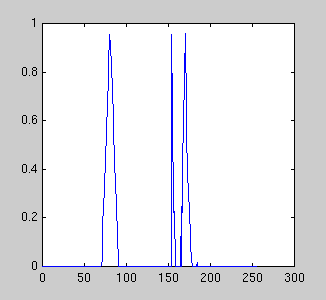 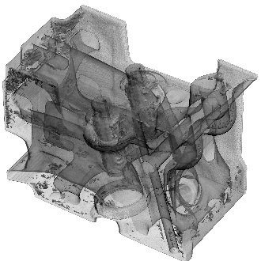 Not bad for default settings. However, it would be quite unfortunate if comparisons (of other transfer function generation schemes) with my method were based solely on the output of using these defaults.The plot of opacity function was done in matlab. Until I write a nrrd reader for matlab, a very simple way of getting 1-D data into matlab is with unrrdu's "2a" program, plus judicious use of tail, to cut away the NRRD header information.
2a engine-opac1.nrrd - | tail +10 > engine-opac11.txt
(then, inside matlab) >> v = dlmread('engine-opac11.txt'); plot(v);The default setting is that sigma and gthresh are determined automatically, but the heuristics for doing this are not too bright. Sigma is defined to be half the thickness of the transition region between materials, as measured in voxels; here's a picture. For this dataset, the automatic calculation of sigma is 2.39167. This is really much to high; 1.5 is probably more accurate:
gkms opac -s 1.5 engine-info1.nrrd engine-opac11.nrrd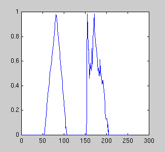 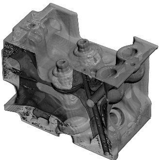 This is the general rule with setting sigma: the lower the value, the thicker the opaque region in the opacity function, so boundaries become more opaque. You may wonder why the the boundary isn't totally opaque, given that the opacity function goes all the way to 1.0. Well, there's a good reason for that having to do with appearance-preserving sampling rate control in raycast volume rendering; this subtlety has been discussed elsewhere.The first (leftmost, at lower data values) peak in the opacity function is for the transition between the background and less radio-opaque of the two materials. To show that the second peak isn't wildly misplaced:
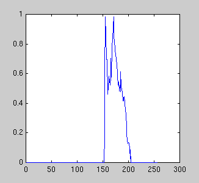 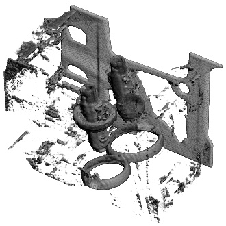 There seems to be a lot of junk that isn't a boundary, which is being rendered by this opacity function. That's because there is no one-dimensional opacity function which can accurately display the three boundaries which are present in this dataset. Given that my method tries dutifully to generate opacity functions which make all boundaries opaque, it is bound to get a little confused here.One way to fix this is to use a two-dimensional opacity function. This allows you to disambiguate between different boundaries based on their gradient magnitudes. gkms opac generates two-dimensional opacity functions just as easily as one-dimensional (and let's make the boundaries a little thicker still, by setting sigma to 1.0):
gkms opac -s 1 engine-info2.nrrd engine-opac21.nrrd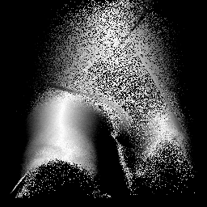 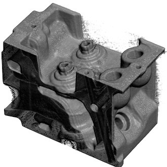 The gray-scale image of the 2-D opacity function indicates higher opacity with higher brightness. Just as with the scatterplots and the images of p(v,g), data value is on the horizontal axis, and gradient magnitude is the vertical axis. There is some ambient fuzz in the image, caused by the inappropriate inclusion of some low gradient magnitude values in the opacity function. The output of the above command notifies us that the automatically calculated gthresh was 5.09551; lets raise that:gkms opac -s 1 -g 15 engine-info2.nrrd engine-opac22.nrrd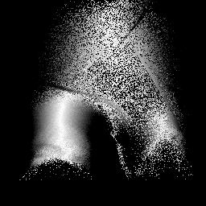 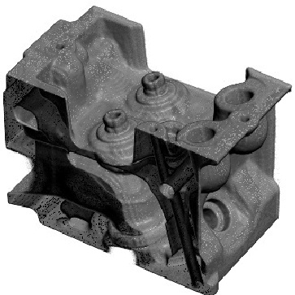 The general rule for setting gthresh is this: set as high as necessary to get rid of background material which would otherwise be made opaque. For one-dimensional opacity functions, it also serves to narrow the width of the peaks in the opacity function. There is a new problem in this image though- a slight speckling on the surface- spots that are either too bright or dark. This is (I believe) caused by the fact that the semi-automatically generated opacity function has many small gaps and holes in it, due to its close connection to the histogram volume. This can be largely remedied with a bit of median filtering applied to the 2D opacity function:gkms opac -s 1 -g 15 -m 1 engine-info2.nrrd engine-opac22.nrrd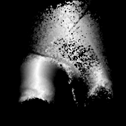 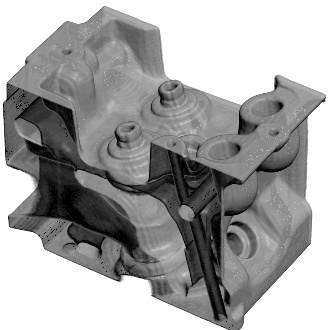 Now we can show how there are three boundaries in the engine block dataset, by first taking away the boundary between background and the less dense material: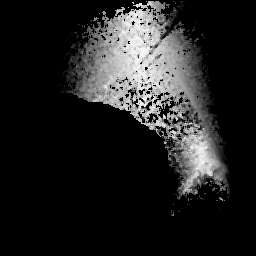 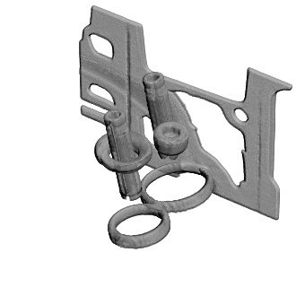 Splendid. Now, we can show that there really are two very distinct boundaries left, by assinging different colors to them. The second image shows the color part of the transfer function, which to this point has been all white.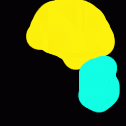 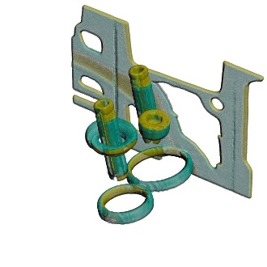 The blue part of the boundary is the surface between the low density and high density materials. The yellow part of the surface is the surface between the high density material and air. It is the yellow surface which can not be selectively rendered with a one-dimensional opacity function (or any isosurface).The editing which produced the last opacity and color functions was done by hand. In a paint program. This is not as ridiculous as it may sound, for this reason: the different boundaries in the volume, are quite graphically depicted in the p(v,g) images, so there is no shortage of guidance on where the projections of the three different boundaries fall in the two-dimensional value-gradient space. Based on that guidance, there is no guesswork in deciding where to edit out opacity or paint in colors.
One parameter in the opacity function hasn't been played with: the boundary emphasis function. The command-line paramters allow you to create anything between a box function and a tent function, with arbitrary height, and arbitrary position ... More information as time permits ...